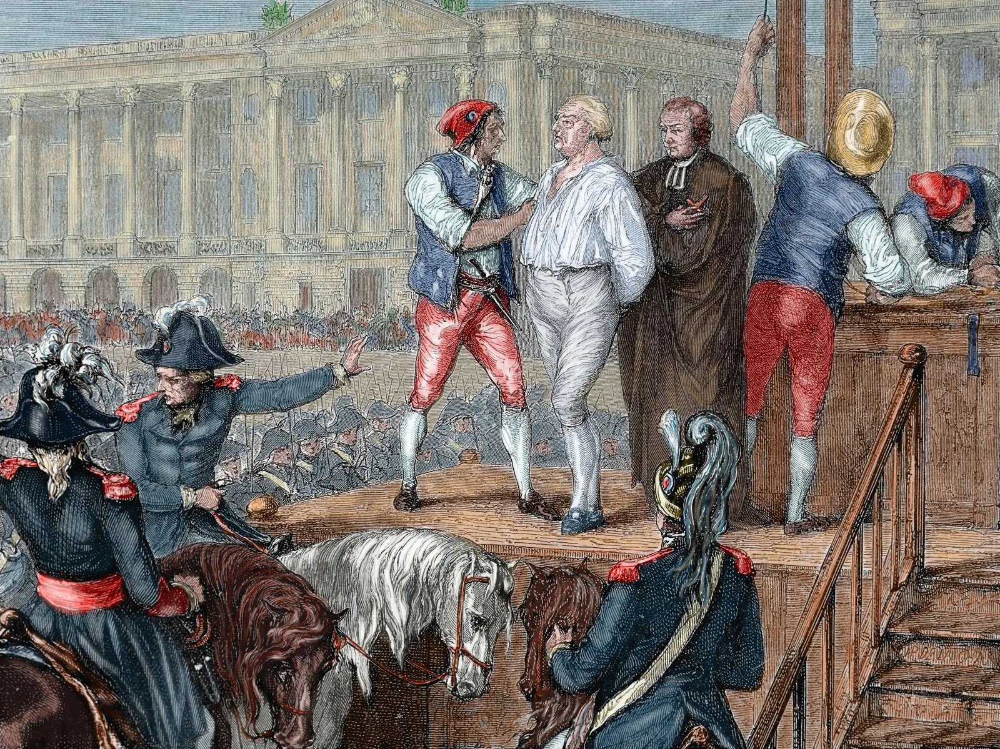
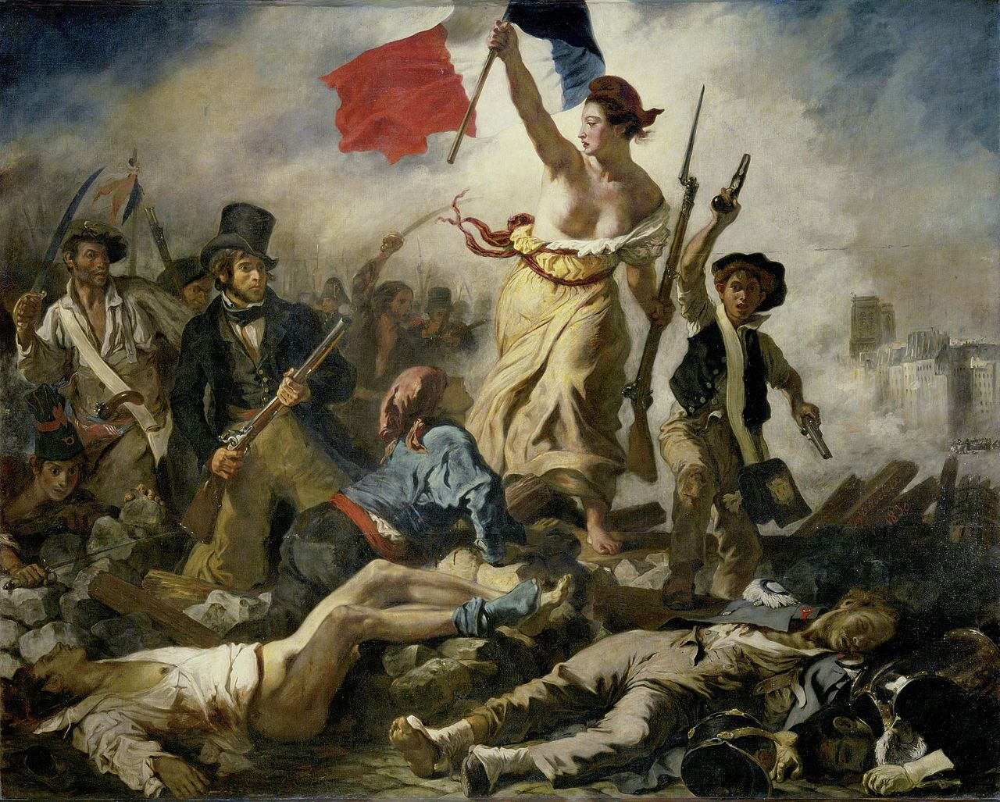
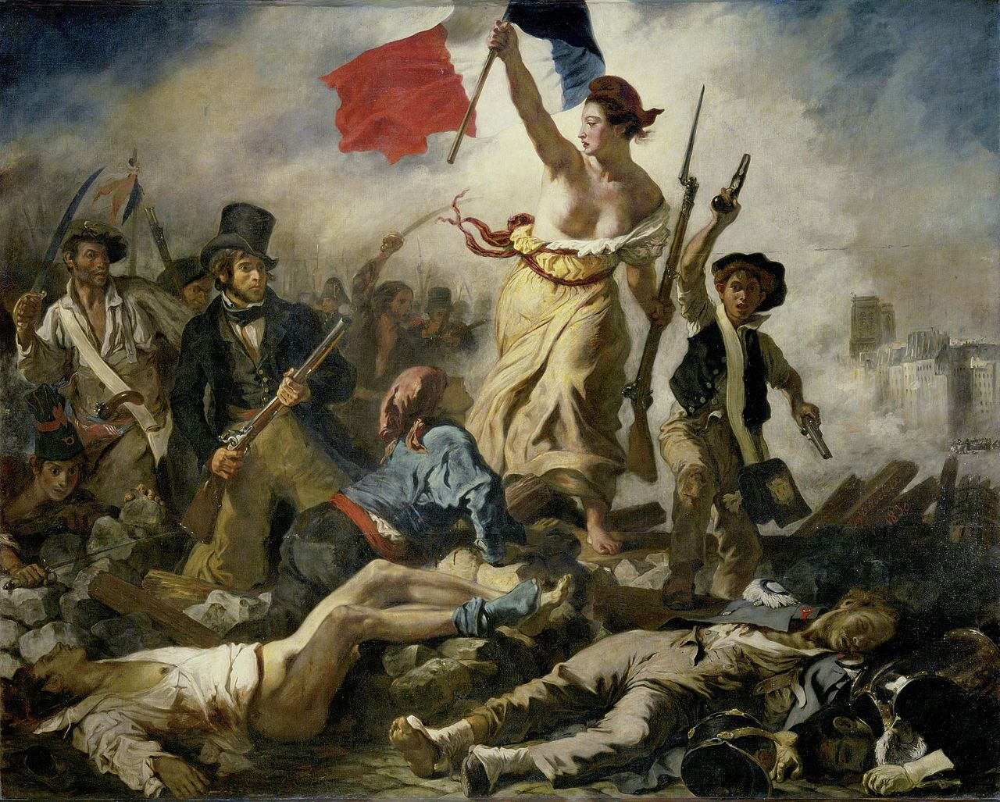

The French Revolution was a watershed event in world history that began in 1789 and ended in the late 1790s with the ascent of Napoleon Bonaparte. During this period, French citizens radically altered their political landscape, uprooting centuries-old institutions such as the monarchy and the feudal system. The French Revolution had general causes common to all the revolutions of the West at the end of the 18th century and particular causes that explain why it was by far the most violent and the most universally significant of these revolutions. The first of the general causes was the social structure of the West. The feudal regime had been weakened step-by-step and had already disappeared in parts of Europe. The increasingly numerous and prosperous elite of wealthy commoners—merchants, manufacturers, and professionals, often called the bourgeoisie—aspired to political power in those countries where it did not already possess it. The peasants, many of whom owned land, had attained an improved standard of living and education and wanted to get rid of the last vestiges of feudalism so as to acquire the full rights of landowners and to be free to increase their holdings. Furthermore, from about 1730, higher standards of living had reduced the mortality rate among adults considerably. This, together with other factors, had led to an increase in the population of Europe unprecedented for several centuries: it doubled between 1715 and 1800. For France, which with 26 million inhabitants in 1789 was the most populated country of Europe, the problem was most acute.
 
